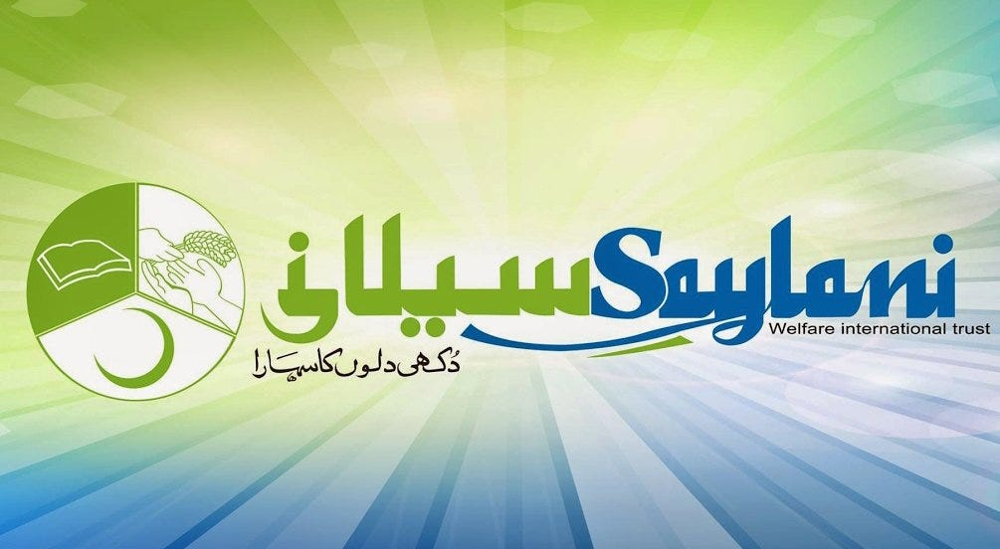

Salani IT Traning Institute
Molana Bashir Farooqi

Maulana Bashir Ahmad Farooqi Qadri, the visionary founder and Chairman of Saylani Welfare International Trust, has notably championed IT education through the Trust’s ambitious Mass IT Training Programme. Initially conceived in 2013 to train 10,000 developers in emerging technologies like React, Node.js, Angular, CCNA, graphic design, and mobile app development, it has successfully graduated over 4,000 developers from Karachi and Faisalabad
By late 2024, Saylani announced its graduates earn significant foreign exchange via freelancing, with some alumni pledging to bring their overseas income back to Pakistan—part of a broader goal of generating $100 billion annually in IT exports thenews.com.pk. In early 2025, the Sindh Governor praised a “Coding Night” event at Saylani’s Zaitoon Ashraf IT Park—where 700+ trainees showcased their programming skills—and highlighted their capacity to earn in US dollars via freelancing.
Bolstering this vision, in August 2024 Sheikh Farooqui received the UAE’s Soft Diplomacy Award as he unveiled plans for the Saylani School of Emerging Sciences and Skills Education, aimed at producing 10 million skilled graduates by 2035 and contributing $1 billion annually in value.
Web and App development

🌐 Web Development at Saylani:
Saylani Welfare International Trust offers a comprehensive Web Development course under its Mass IT Training Program, equipping students with in-demand skills like HTML, CSS, JavaScript, React.js, and backend technologies like Node.js and MongoDB. The course is designed to help youth build full-stack websites and dynamic applications. With project-based learning and real-world problem-solving, Saylani has empowered thousands of students to start freelancing, launch startups, or join software companies, contributing to Pakistan’s growing IT economy.
📱 App Development at Saylani:
Saylani's App Development training focuses on building mobile applications using cutting-edge technologies such as Flutter, React Native, and native Android development with Java and Kotlin. The program emphasizes UI/UX design, backend integration, and app deployment, enabling students to create professional-grade apps for both Android and iOS platforms. Graduates often move on to freelance platforms or employment in tech firms, and some even publish apps on the Play Store—proving Saylani’s success in making mobile development a powerful tool for economic uplift.
Made By Ikramullah 404008